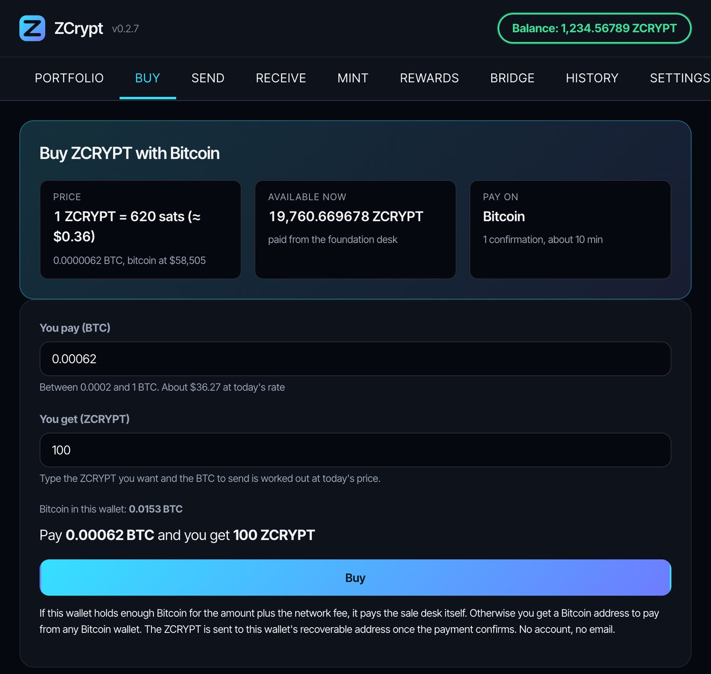
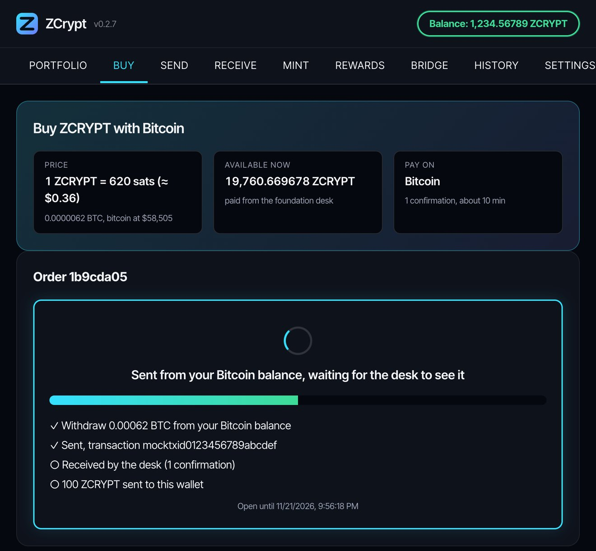

Your first coins
Buy it with Bitcoin inside the desktop wallet, have someone pay you, or earn it by staking. There is no account to open and no email to give.
Buy
The desktop wallet has a Buy tab. It talks to the foundation's sale desk, shows you the price before you pay, and sends the coins straight to your wallet.


Screens captured on 20 November 2026 with that day's desk price. The wallet always shows the current price and how much is available.
On iPhone: the Buy tab is in the desktop wallet only. Buy on a computer, then send the coins to your phone as a payment file or to your phone's address.
Get paid
Anyone who has ZCRYPT can send you a payment file in a chat. Open it in the wallet and the coins are yours one block later. You do not need any coins first: the file pays its own fee.
You can also give them your address, or let them scan its QR code on the Receive tab.
Earn
The trading platform arrives in Q2 2027. Until then the sale desk and direct swaps are the ways to buy.